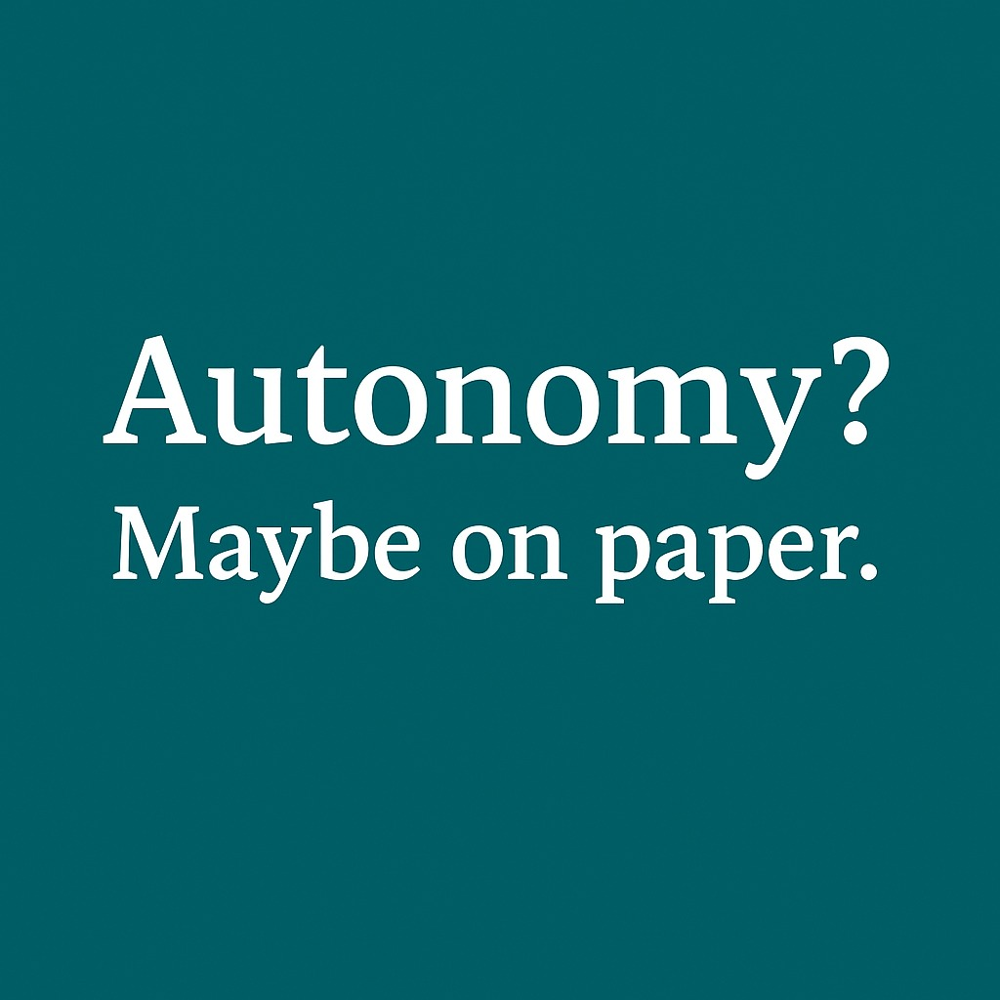

ถ้าระบบตรวจอาจารย์ละเอียดขนาดนี้ คำถามอาจไม่ใช่เรื่องทุจริต แต่คือรัฐกำลังไม่ไว้ใจมหาวิทยาลัยหรือเปล่า
{kind=link}

บทความนี้ตั้งคำถามแรงแต่ตรงมากว่า วงการมหาวิทยาลัย “ทุจริตหนักขนาดนั้น” เลยหรือ ถึงต้องให้ส่วนกลางตรวจการเลื่อนตำแหน่งระดับ ผศ. / รศ. ทีละคน ทั้งที่ตำแหน่งเหล่านี้เป็นระดับปฏิบัติงานหรือหัวหน้าฝ่าย ไม่ใช่ระดับอธิบดี
สิ่งที่ผู้เขียนกำลังตั้งคำถามจึงไม่ใช่เพียงขั้นตอนราชการ แต่คือโครงสร้างของ ความไว้วางใจ ว่าทำไมมหาวิทยาลัยจึงถูกกำกับในระดับละเอียดเช่นนี้ ขณะที่วิชาชีพหรือองค์กรอีกหลายประเภทที่มีผลกระทบต่อผู้คนมากกว่า กลับไม่ได้ถูกตรวจทีละคนในลักษณะเดียวกัน
จุดเด่นของโพสต์นี้คือการเปรียบเทียบแบบตรงไปตรงมาข้ามสาขา ตั้งแต่แพทย์ วิศวกร สถาปนิก ทหาร ไปจนถึงทนาย เพื่อชี้ให้เห็นว่าหากใช้ตรรกะเดียวกันจริง เหตุใดวิชาชีพเหล่านี้จึงไม่ต้องผ่านการส่งเรื่องเข้ากระทรวงตรวจทีละคนในระดับที่อาจารย์มหาวิทยาลัยต้องเผชิญ
ถ้าจะเทียบศาสตราจารย์กับอธิบดี ก็ต้องถามให้สุดเรื่องมาตรฐานเดียวกัน
ผู้เขียนหยิบความย้อนแย้งขึ้นมาขยายต่ออย่างเฉียบคมว่า หากตำแหน่ง ศาสตราจารย์ ถูกยกสถานะเทียบกับอธิบดี ถึงขั้นต้องโปรดเกล้า แล้วถ้าต้องการความโปร่งใสและเสมอภาคจริง เหตุใดจึงไม่ใช้มาตรฐานอย่างการยื่นบัญชีทรัพย์สินกับคนกลุ่มนี้ด้วย
มุมนี้ไม่ใช่ข้อเสนอเชิงเทคนิคอย่างเดียว แต่เป็นการสะท้อนว่าระบบกำลังใช้ตรรกะเปรียบเทียบแบบเลือกหยิบบางส่วนมาใช้ โดยไม่ได้สร้างความสมเหตุสมผลทั้งระบบ
ปัญหาจริงอาจไม่ใช่เรื่องทุจริต แต่คือระบบไม่ไว้ใจมหาวิทยาลัยพอจะให้ตัดสินกันเอง
แกนกลางของบทความนี้คือการชี้ว่า การส่งเรื่องเลื่อนตำแหน่งทางวิชาการไปให้ส่วนกลางตรวจทีละคนอาจไม่ได้สะท้อนว่ามหาวิทยาลัยมีปัญหาทุจริตรุนแรง แต่สะท้อนว่าระบบราชการ ไม่ไว้ใจมหาวิทยาลัย มากพอจะยอมให้ใช้วิจารณญาณและมาตรฐานเชิงวิชาการของตนเอง
เมื่อมองเช่นนี้ ขั้นตอนตรวจสอบจึงไม่ได้เป็นเพียงเครื่องมือรักษามาตรฐาน แต่กลายเป็นเครื่องหมายของความสัมพันธ์เชิงอำนาจ ที่ส่วนกลางยังอยาก “คุมมหาวิทยาลัย” มากกว่าจะเสริมความเข้มแข็งให้มัน
คำถามปลายทางคือเราจะออกแบบความไว้วางใจใหม่อย่างไรในระบบอุดมศึกษา
โพสต์นี้ไม่ได้ปิดจบด้วยคำตอบ แต่ทิ้งคำถามที่สำคัญมากไว้ว่า หากเรายังจัดความสัมพันธ์ระหว่างรัฐกับมหาวิทยาลัยบนฐานของความสงสัยเดิม ๆ อุดมศึกษาไทยก็จะยังติดอยู่กับกับดักการกำกับแบบราชการต่อไป
ในแง่นี้ ข้อเขียนจึงเป็นการชวนคิดถึง สถาปัตยกรรมของความไว้วางใจ มากกว่ากระบวนการทางเอกสารเฉพาะหน้า ว่าสุดท้ายเราต้องการมหาวิทยาลัยที่ขยับได้ทันโลก หรือมหาวิทยาลัยที่ถูกควบคุมจนไม่มีพื้นที่ตัดสินใจของตัวเอง